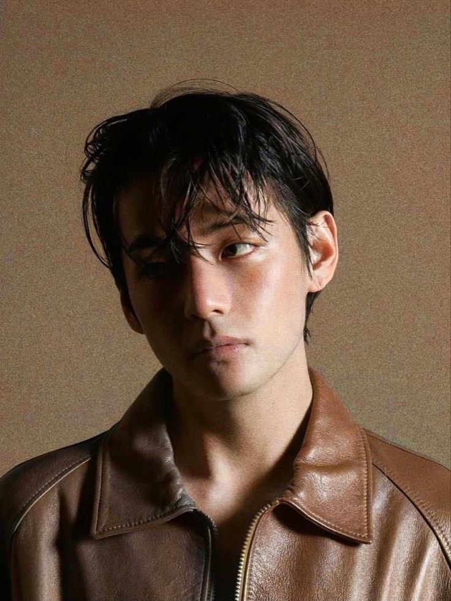
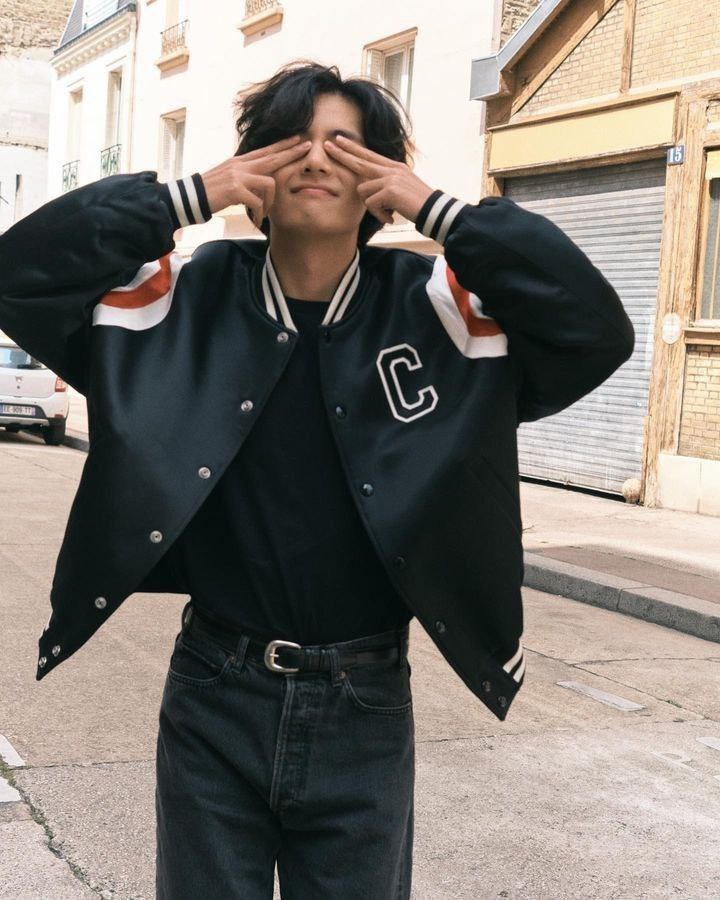
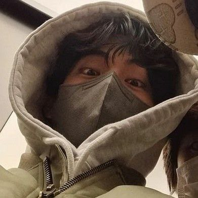
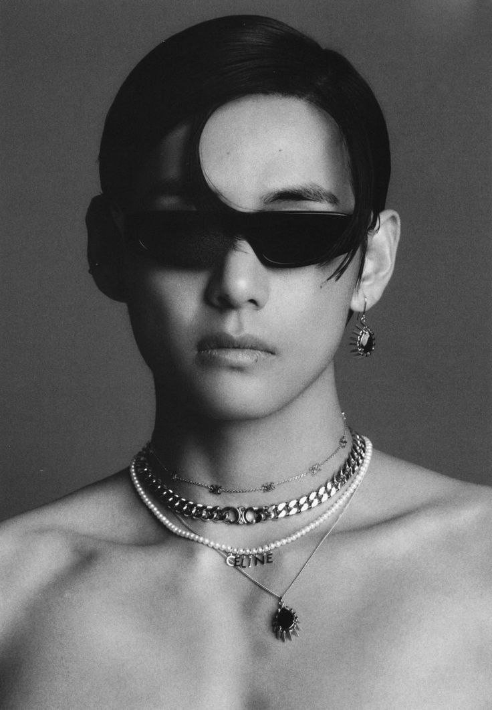

Ким Тэхён, известный как V (Ви), — певец, автор песен и танцор из Южной Кореи. В настоящее время он остается одним из основных участников популярной k-поп группы BTS. У Ви есть армия поклонников в Южной Корее и за рубежом. Биография, личная жизнь и карьера исполнителя всегда в центре обсуждений фанов и критиков.
Ви родился 30 декабря 1995 года в Тэгу, Южная Корея. Фанаты и люди из его родного города часто называют его принцем Тэгу. Козерог, V принадлежит году Свиньи. Согласно китайскому зодиаку, люди, рожденные в этом году, считаются добродушными, честными, доверчивыми, образованными, искренними и смелыми.
Однажды Ви сопровождал одного из своих друзей на прослушивание в BigHit Entertainment. По счастливой случайности компания заинтересовалась Ви и тоже попросила его попробовать себя. Хотя его друг провалил прослушивание, Ви стал стажером в BigHit Entertainment примерно на три года и, наконец, дебютировал как участник BTS в 2013 году.
   